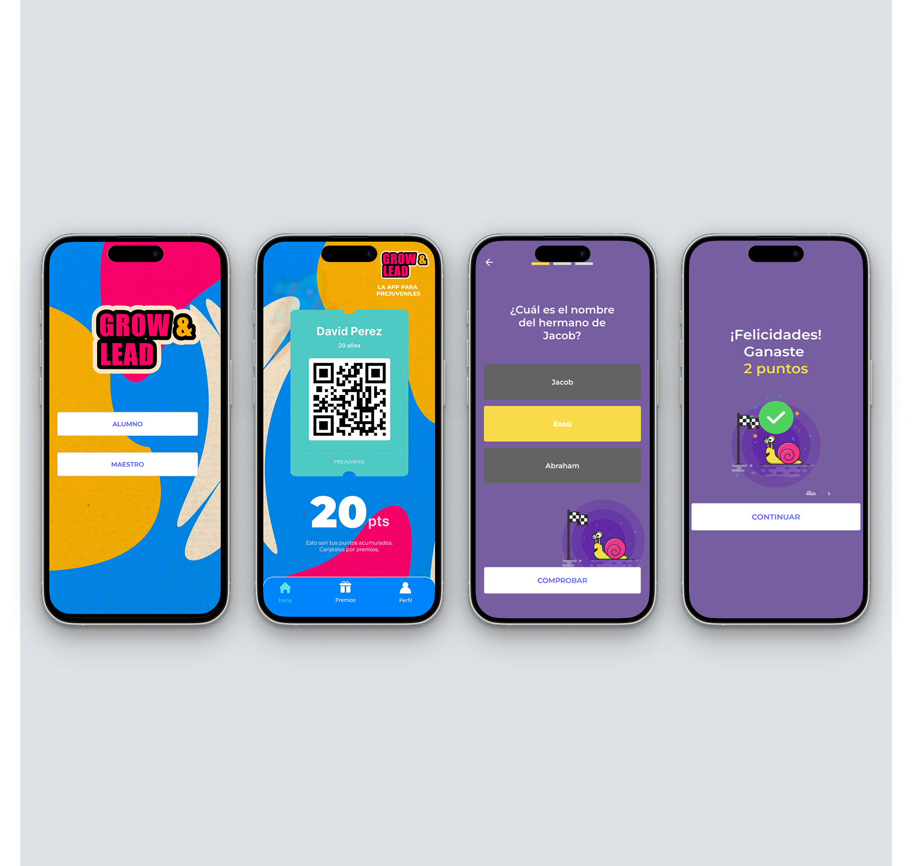

Grow & Lead
Proyecto personal
Proyecto personal
Grow & Lead fue un proyecto personal creado para una comunidad juvenil en la iglesia, pensado como apoyo para seguimiento, motivación, actividades y participación.

La idea nació al ver la oportunidad de crear una experiencia digital más cercana y ordenada para conectar mejor con el grupo de jóvenes.
El seguimiento de asistencia, actividades y motivación podía perder continuidad si no existía una herramienta clara que acompañara al grupo.
Se propuso una app con pantallas y flujos simples para centralizar acompañamiento, actividades y motivación dentro de una experiencia fácil de entender.
El proyecto buscó generar más cercanía con los jóvenes, mayor entusiasmo por la asistencia, mejor respuesta a actividades y más aprendizaje dentro del grupo.
Tipo: App para acompañamiento juvenil
Estado: Proyecto personal, actualmente inactivo
Herramientas: Figma, Flutter, Firebase y GitHub
Enfoque: Motivación, seguimiento y experiencia del usuario